### Extracting Mesoscale Neuron Anatomy from Whole-Brain Images Thomas L. Athey Research Defense June 12, 2023 <br> <img src="../../images/funding/jhu_bme_blue.jpg" STYLE="width:100%;" /> <!-- <img src="../images/funding/KNDI.png" STYLE="HEIGHT:95px;"/> --> --- ### Mesoscale Neuron Anatomy <div class="row"> <div class="column2"> 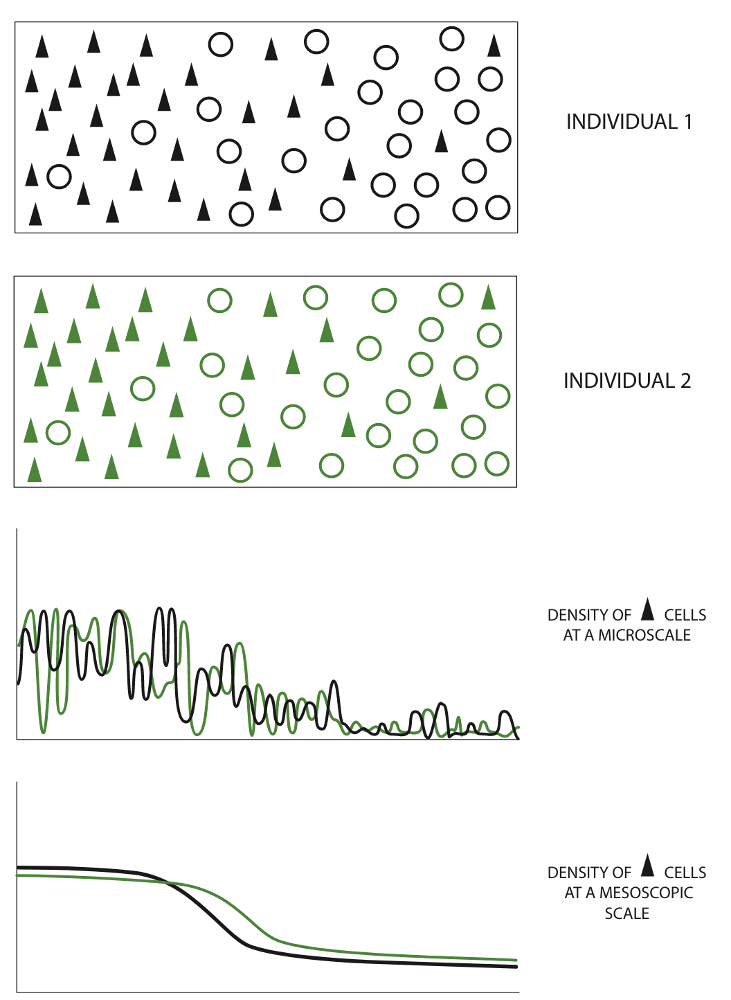 </div> <div class="column2"> 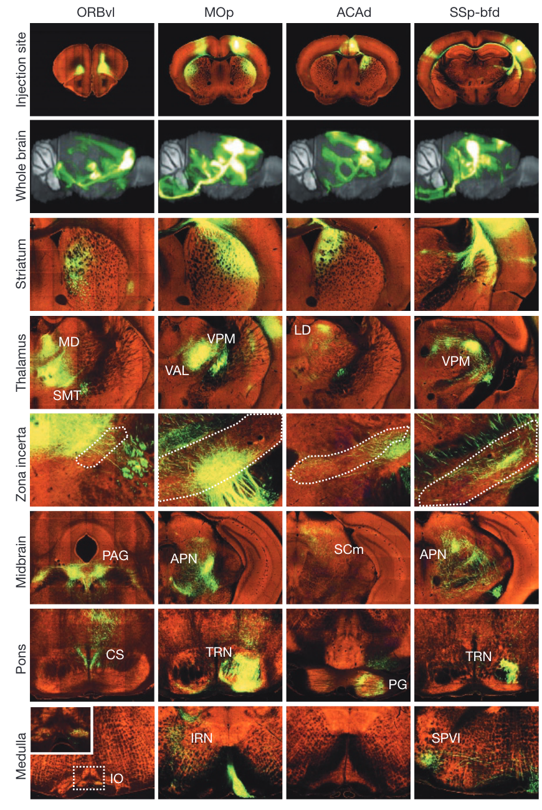 </div> </div> <footer, style="font-size: 12px"> Mitra, 2014; Oh et al., 2014 </footer> --- ### The Problem - A cell-level atlas of the mammalian brain could revolutionize how we understand brain function and brain disorders. - Two key computational steps associated with cataloging mesoscale morphology are: - Neuron segmentation and tracing - Mapping neurons to common coordinate systems <div class="row"> <div class="column2"> 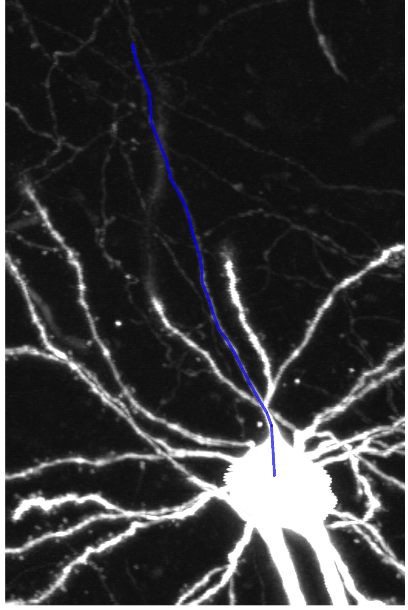 </div> <div class="column2"> 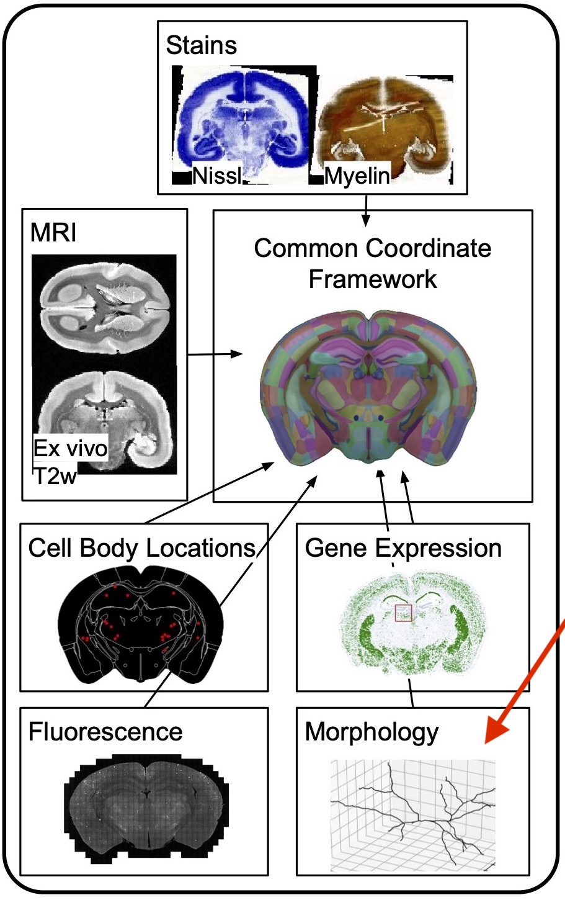 </div> </div> --- ### What we've done - Developed an open pipeline for region-based connectivity analysis.<sup>1</sup> - Developed and validated HMM based neuron tracing method.<sup>2</sup> - Investigated the distortion introduced in transforming discretized neuron traces.<sup>3</sup> - Fit splines to neuron traces and study curvature/torsion across axonal arbors.<sup>4</sup> <br><br><br> <footer, style="font-size: 12px"> (1) Athey et al. (2023) BrainLine: An Open Pipeline for Connectivity Analysis of Heterogeneous Whole-Brain Fluorescence Volumes. <i>In Prep</i>. <br> (2) Athey et al. (2022) Hidden Markov modeling for maximum probability neuron reconstruction. <i>Commun Biol</i>. <br> (3) Athey et al. (2023) Preserving Derivative Information while Transforming Neuronal Curves. <i>In Review</i>. <br> (4) Athey et. al. (2021) Fitting Splines to Axonal Arbors Quantifies Relationship Between Branch Order and Geometry. <i> Front. Neuroinform. </i> </footer> --- ## .center[1) Pipeline for Region-Based Connectivity Analysis] <br><br><br><br><br><br><br><br><br><br><br><br> <footer, style="font-size: 12px"> Athey et al. (2023) BrainLine: An Open Pipeline for Connectivity Analysis of Heterogeneous Whole-Brain Fluorescence Volumes. <i>Submitted</i>. </footer> --- ### 1) Pipeline for Region Based Connectivity Analysis 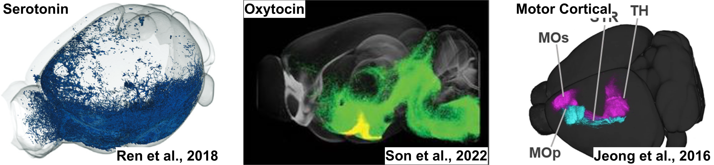 <img src="images/connect.png" STYLE="width:70%;" class="center"/> <footer, style="font-size: 12px"> Mitra (2014), Oh et. al. (2014), Allen Connectivity Atlas, BICCN (2021), Foxley et. al. (2021) </footer> --- ### 1) Pipeline for Region Based Connectivity Analysis <img src="images/pipeline.png" STYLE="width:100%;" class="center"/> Applied to genetic subtypes of serotonergic neurons in the DRN. <br><br><br><br><br> <footer, style="font-size: 12px"> Athey et. al., bioRxiv (2023), Berg et. al. (2019), Chandrashekhar et. al. (2021), Claudi et. al. (2020) </footer> --- ### Axon Projections 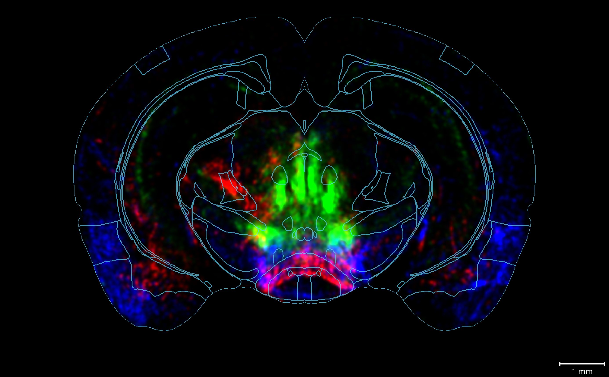 --- ### Presynaptic Cell Bodies 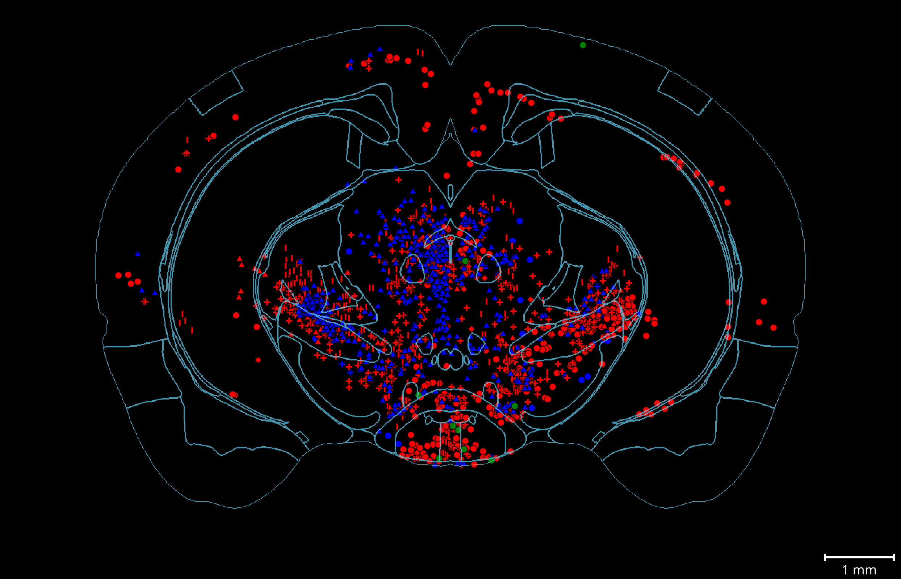 --- ### Region Analysis <div class="row"> <div class="column2"> 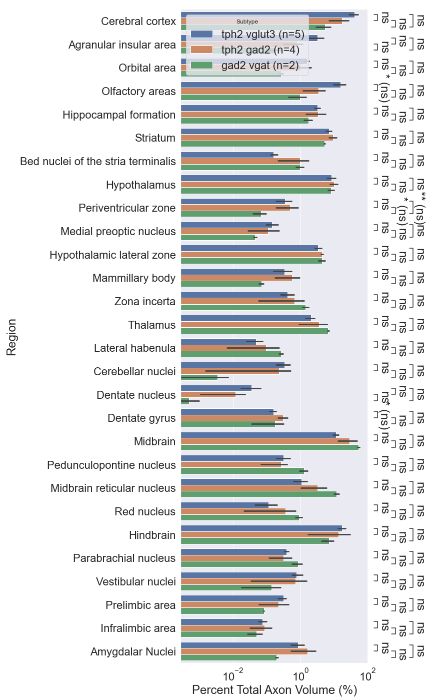 </div> <div class="column2"> 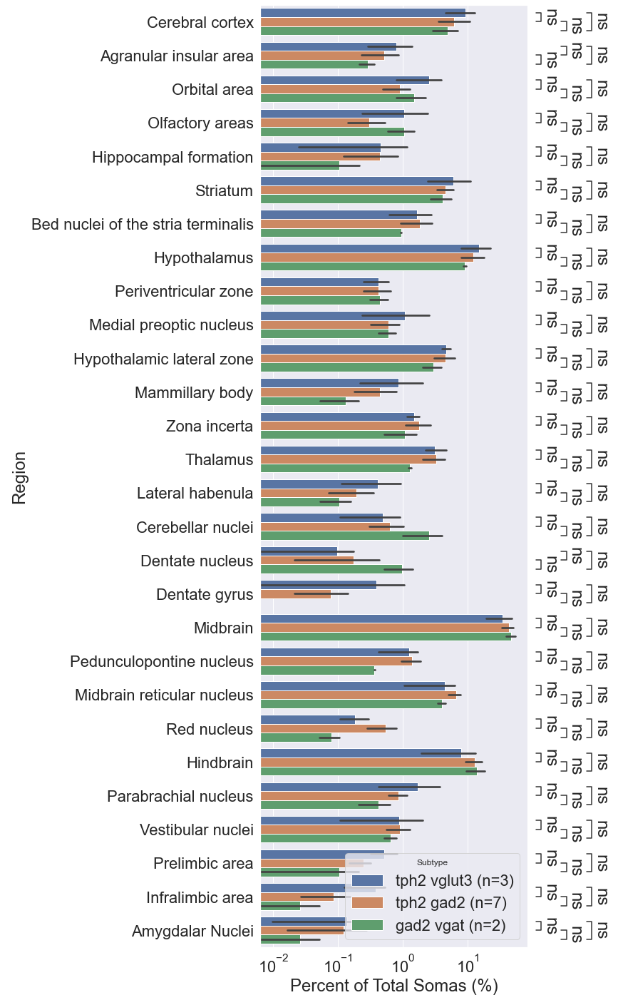 </div> </div> --- ## .center[2) Hidden Markov Model-based Neuron Tracing] <br><br><br><br><br><br><br><br><br><br><br><br><br> <footer, style="font-size: 12px"> Athey et al. (2022) Hidden Markov modeling for maximum probability neuron reconstruction. <i>Commun Biol</i>. </footer> --- ### 2) ViterBrain: HMM-based Neuron Tracing <img src="images/fig2_algorithm.jpg" STYLE="width:100%;" /> <footer, style="font-size: 12px"> Geman and Jedynak (1996), Longair et al. (2011), Xiao and Peng (2013), Radojevic and Meijering (2017), Xiao and Peng (2013) </footer> --- ### 2) ViterBrain: HMM-based Neuron Tracing 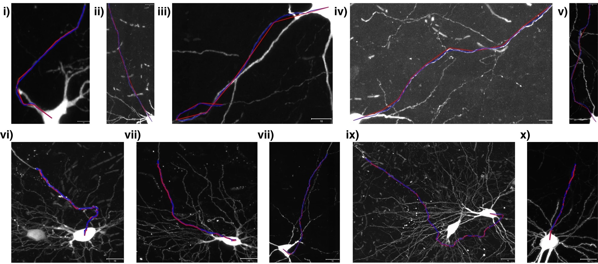 --- ### Linear Fragment Assumption <img src="images/frags.png" STYLE="width:75%;" class="center"/> 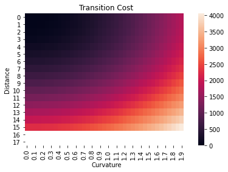 --- ### 2) Apply ViterBrain to Whole-Brain Images <video width="100%" height="70%" controls> <source src="videos/tracing.mov"> </video> <footer, style="font-size: 12px"> Ongoing collaboration with Sriram Sudarsanam of Kolodkin Lab. </footer> --- ### 2) Apply ViterBrain to Whole-Brain Images 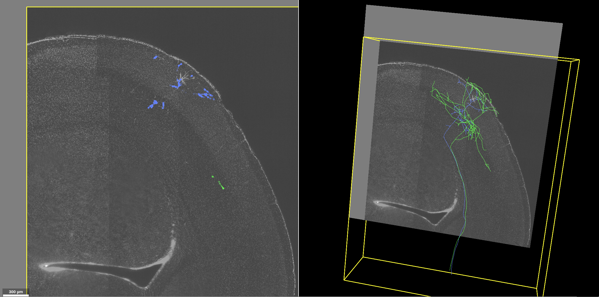 <footer, style="font-size: 12px"> Ongoing collaboration with Sriram Sudarsanam of Kolodkin Lab. </footer> --- ## .center[3) Mapping Discretized Neuronal Curves with Diffeomorphisms] <br><br><br><br><br><br><br><br><br><br><br> <footer, style="font-size: 12px"> Athey et al. (2023) Preserving Derivative Information while Transforming Neuronal Curves. <i>In Review</i>. </footer> --- ### 3) Mapping Discretized Neuronal Curves with Diffeomorphisms <div class="row"> <div class="column2"> Existing Method: <br> $c:\mathbb{R}\rightarrow \mathbb{R}^3$ sampled at $\lbrace t_i \rbrace_i$ $$\phi \cdot \lbrace (t_i, c(t_i)) \rbrace_i=$$ $$\lbrace (t_i, \phi \circ c(t_i)) \rbrace_i$$ </div> <div class="column2"> <img src="images/comp2.jpg" STYLE="width:100%;"/> </div> </div> Generalized Method: $$\phi \cdot \lbrace (t_i, c(t_i), c'(t_i),...,c^{(k)}(t_i)) \rbrace_i=\lbrace (t_i, \phi \circ c(t_i), \frac{d}{dt}\phi \circ c(t_i),$$ $$...,\frac{d^k}{dt^k}\phi \circ c(t_i)) \rbrace_i$$ <footer, style="font-size: 12px"> Fedorov (2013), Qu et al. (2022) </footer> --- ### 3) Mapping Discretized Neuronal Curves with Diffeomorphisms 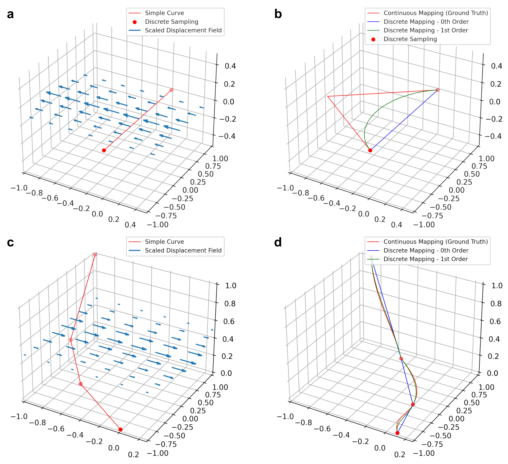 <footer, style="font-size: 12px"> Athey et al. (2023) Preserving Derivative Information while Transforming Neuronal Curves. <i>In Review</i>. </footer> --- ### 3) Mapping Discretized Neuronal Curves with Diffeomorphisms 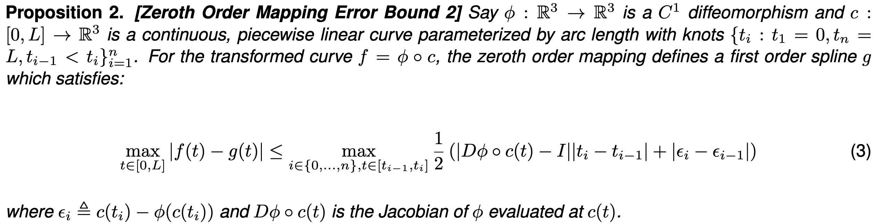 --- ### 3) Mapping Discretized Neuronal Curves with Diffeomorphisms Also, for $f=\phi \circ c$ and $g_0,g_1$ zeroth and first order mappings $$Error(g_0) \leq |\partial_t^4 f |O(\delta^4)+|\partial_t^3 f |O(\delta^3)+|\partial_t^2 f |O(\delta^2)$$ $$Error(g_1) \leq |\partial_t^4 f |O(\delta^4)$$ where bounds are tight. --- ### 3) Not Much Practical Improvement <div class="row"> <div class="column2"> Image Registration Transformation Has Small Non-affine Component 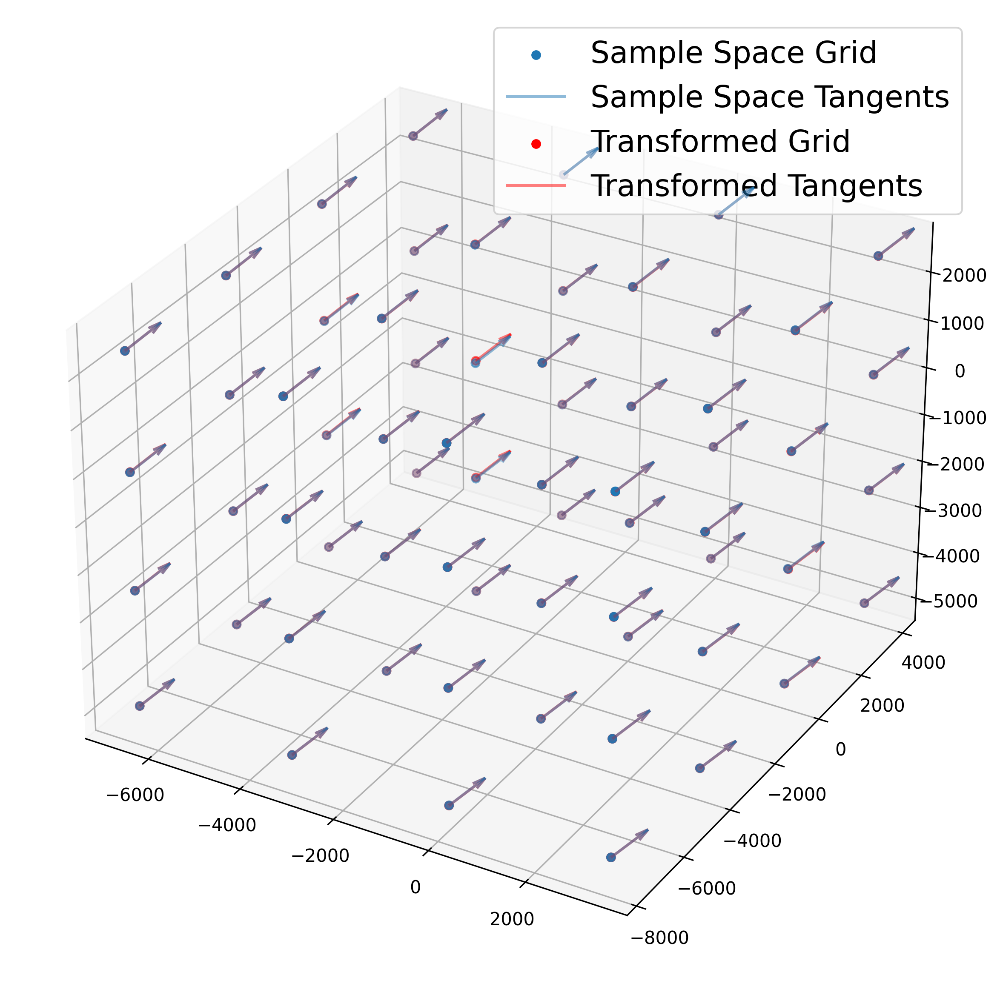 </div> <div class="column2"> 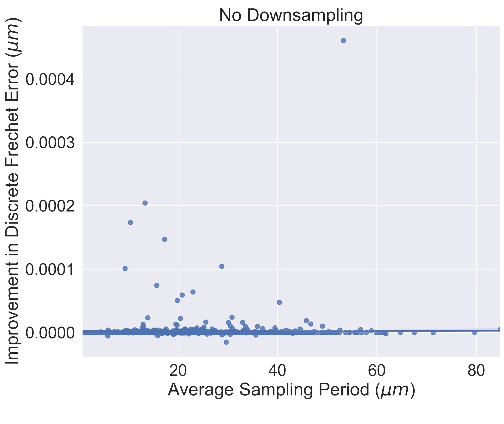 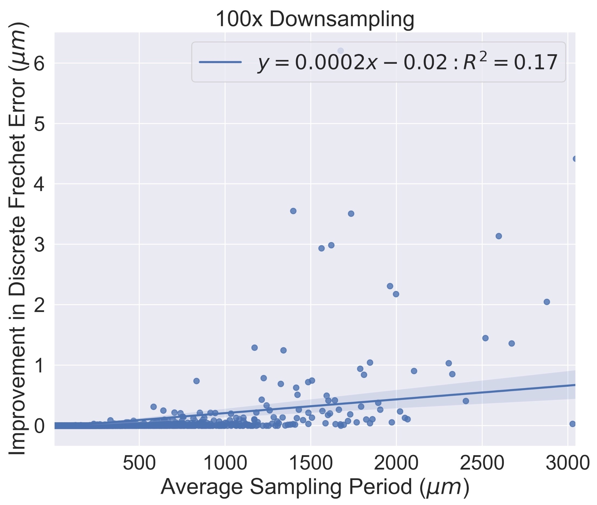 </div> </div> --- ### 3) Synthetic Diffeomorphisms? $$\phi=exp_{I_d}(v), v \sim \mathcal{N}(0, \sigma^2)$$ 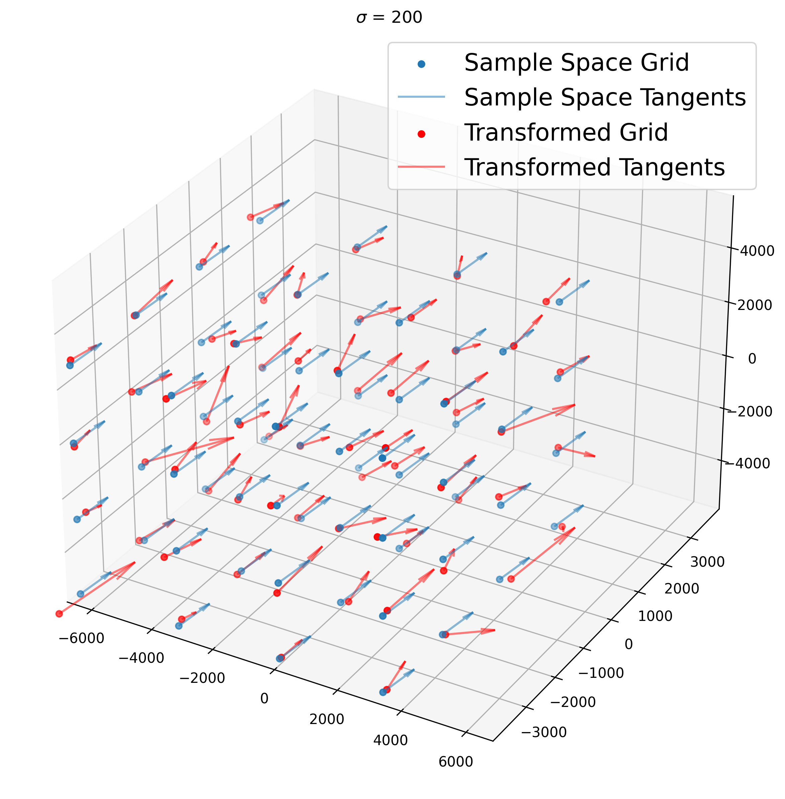 <footer, style="font-size: 12px"> Tward and Miller (2017). </footer> --- ### 3) Synthetic Diffeomorphisms? 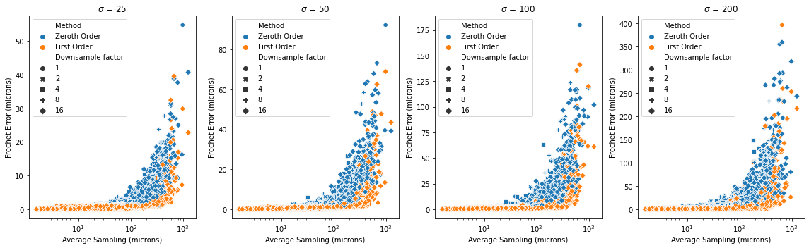 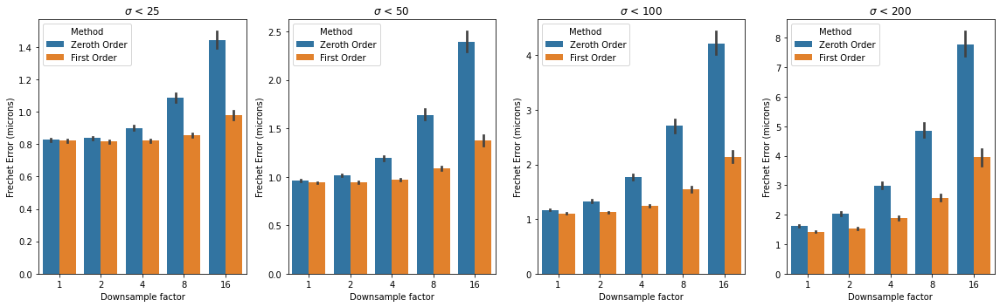 --- ## .center[4) Comparing Curvature and Torsion across Axonal Arbors] <br><br><br><br><br><br><br><br><br><br><br><br><br> <footer, style="font-size: 12px"> Athey et. al. (2021) Fitting Splines to Axonal Arbors Quantifies Relationship Between Branch Order and Geometry. <i> Front. Neuroinform. </i> </footer> --- ### 4) Compare Curvature and Torsion across Axonal Arbors 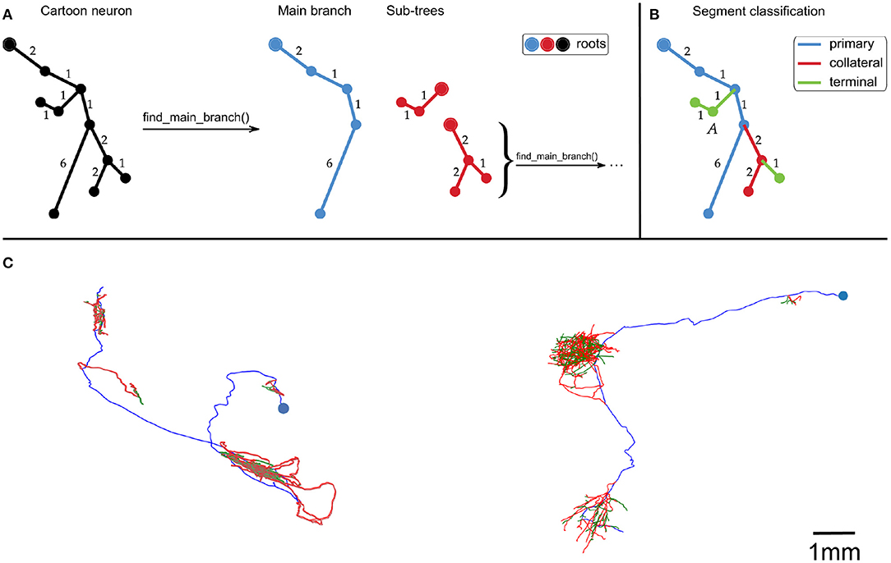 --- ### 4) Compare Curvature and Torsion across Axonal Arbors 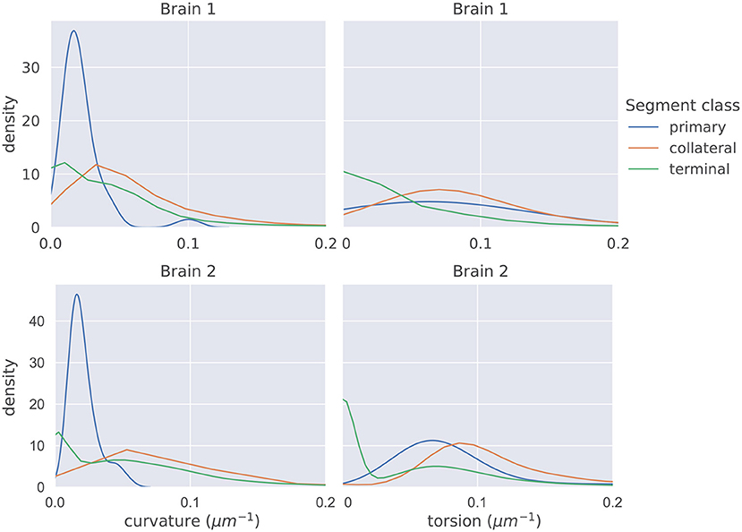 --- ### TODO #### Research - Get Neuron Mapping published (Nature Communications). - Get BrainLine published (News Item in Neuroinformatics). - Process ten more Sert labeled whole-brain images (Wright collaboration). - Use assisted tracing on ten Layer 2/3 neurons in >1 whole-brain image (Sudarsanam collaboration). - Make <a href="http://brainlit.neurodata.io/">brainlit</a> package FIRM (Vogelstein, 2018). #### Other - Apply for F32 grant. - Complete Phase III of Teaching Academy. --- ### Thank You! #### Thesis Committee <div class="small-container"> <img src="../../faces/mim.jpg"/> <div class="centered">Michael Miller</div> </div> <div class="small-container"> <img src="../../faces/jovo.png"/> <div class="centered">Joshua Vogelstein</div> </div> <div class="small-container"> <img src="../../faces/laurent.jpeg"/> <div class="centered">Laurent Younes</div> </div> <div class="small-container"> <img src="../../faces/kolodkin.jpg"/> <div class="centered">Alex Kolodkin</div> </div> #### Collaborators <div class="small-container"> <img src="../../faces/uli.jpg"/> <div class="centered">Ulrich Mueller</div> </div> <div class="small-container"> <img src="../../faces/dtward.jpg"/> <div class="centered">Daniel Tward</div> </div> <div class="small-container"> <img src="../../faces/sriram.jpg"/> <div class="centered">Sriram Sudarsanam</div> </div> <div class="small-container"> <img src="../../faces/jacopo.jpeg"/> <div class="centered">Jacopo Teneggi</div> </div> <div class="small-container"> <img src="../../faces/vikram.jpg"/> <div class="centered">Vikram Chandrashekhar</div> </div> <div class="small-container"> <img src="../../faces/matt_wright.jpeg"/> <div class="centered">Matthew Wright</div> </div> <div class="small-container"> <img src="../../faces/marija_pavlovic.jpeg"/> <div class="centered">Marija Pavlovic</div> </div> <div class="small-container"> <img src="../../faces/gil_stolarski.jpg"/> <div class="centered">Gilad Stolarski</div> </div> #### Funding <div class="small-container"> <img src="../../images/icm_logo.jpeg"/> <div class="centered"></div> </div> <div class="small-container"> <img src="../../images/funding/nih_fpo.png"/> <div class="centered"></div> </div> <div class="small-container"> <img src="../../images/funding/nsf_fpo.png"/> <div class="centered"></div> </div> --- # Feedback --- # .center[Supplement] --- ### Labeling Projections <div class="row"> <div class="column2"> 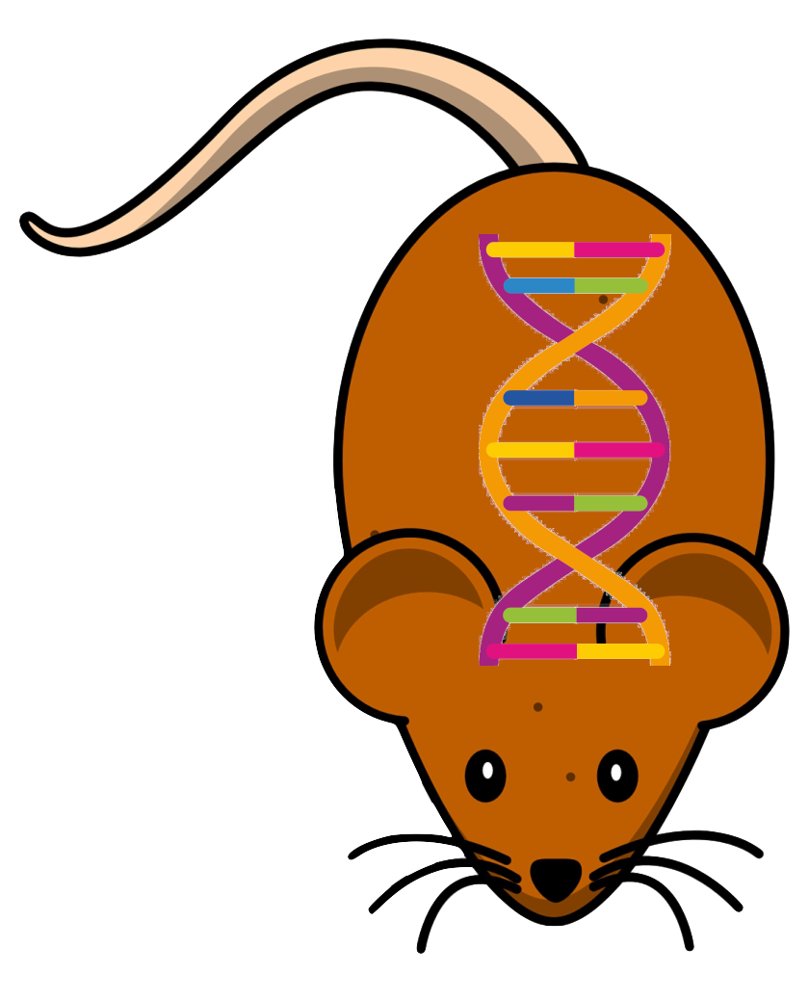 </div> <div class="column2"> 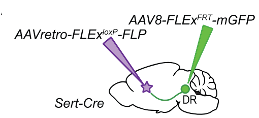 </div> </div> Transgenic mice: Sert cells express Cre recombinase <br> $\downarrow$ <br> AAV at projection site expressing Cre-dependent Flp recombinase <br> $\downarrow$ <br> AAV at DR expressing Flp-dependent GFP --- ### Labeling Inputs <div class="row"> <div class="column2"> 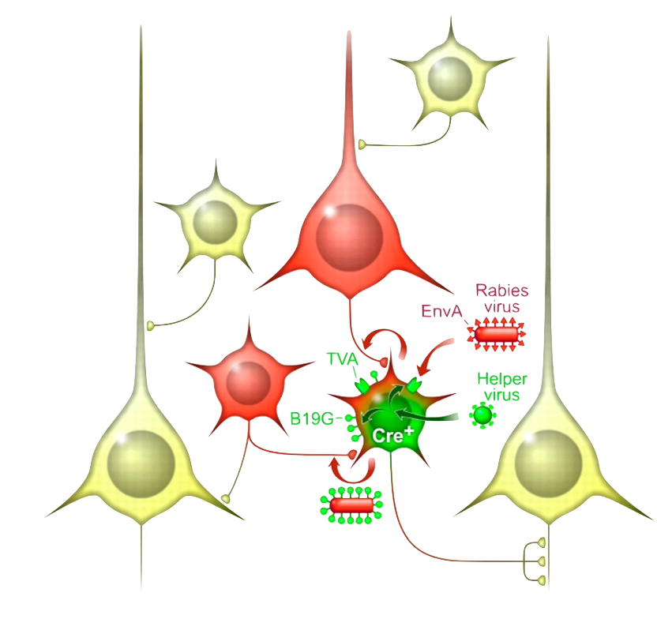 </div> <div class="column2"> Transgenic mice: Sert cells express Cre recombinase <br> $\downarrow$ <br> Cre-dependent helper virus guides rabies virus <br> $\downarrow$ <br> Retrograde transport of rabies virus labels presynaptic cells </div> </div> <footer, style="font-size: 12px"> Wall et al. (2010). </footer> --- ### Genetic Subtypes - TPH2 - Gene for rate limiting enzyme in 5-HT (Serotonin) synthesis. - GAD2 - One of two genes for glutamate decarboxylase, rate-limiting enzyme in converting glutamate to GABA. - VGAT - Vesicular GABA transporter which transports GABA into synaptic vesicles before release. - VGLUT3 - Vesicular glutamate transporter 3 which transports glutamate into synaptic vesicles before release. --- ### Image Segmentation Problem <b>Image Domain</b> $$Y=\lbrace y_i \rbrace, Y \subset \mathbb{Z}^3$$ <b>Image</b> $$I \in \mathcal{I}_c(Y): Y \rightarrow \mathbb{R}^c $$ $c=3$: Antibody, Endogeneous, Background. <b>Problem</b> $$\mathcal{I}_3(Y) \rightarrow P(Y)$$ where $P(Y) = \lbrace p: Y \rightarrow [0,1]\rbrace$ --- ### Image Segmentation Approach <b>Image Features</b>: intensity, difference of Gaussian, eigenvalues of Hessian $$\phi : \; \mathcal{I}_3(Y) \rightarrow \mathcal{I}_d(Y) $$ - <a href="https://mathworld.wolfram.com/Shift-InvariantOperator.html">Shift Invariant </a> - <a href="https://en.wikipedia.org/wiki/Nonlocal_operator"> Local Operator</a> <b>Posterior Estimate</b>: random forest $$\hat{p}: \; \mathbb{R}^d \rightarrow [0,1]$$ <b>Complete Transformation</b> $$(\hat{p} \circ \phi(I))(\cdot) : \; Y \rightarrow [0,1]$$ --- ### Object Detection <b>Posterior Estimate</b>: $$(\hat{p} \circ \phi(I))(\cdot) : \; Y \rightarrow [0,1]$$ <b>Connected Components</b> Collect components greater than a given size. 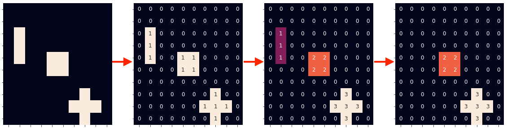 --- ### BrainLine Predictor <div class="row"> <div class="column2"> 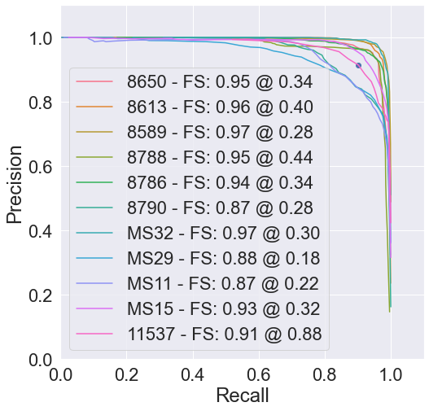 </div> <div class="column2"> 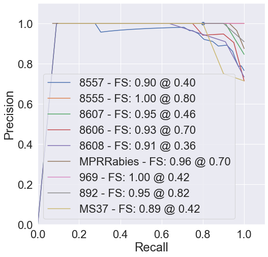 </div> </div> --- ### Hemispheres 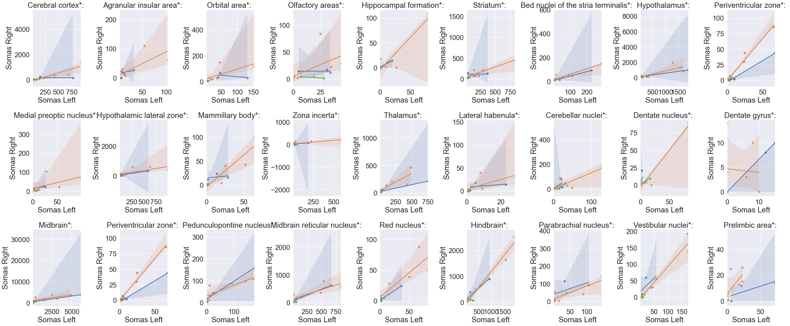 --- ### Global Test - Group 1 distribution across regions: $\lbrace p_i \rbrace$ with mean $\bar p$ - Group 2 distribution across regions: $\lbrace q_i \rbrace$ with mean $\bar q$ $$d(\bar p, \bar q)=D(\bar p||\bar q)+D(\bar q||\bar p)$$ 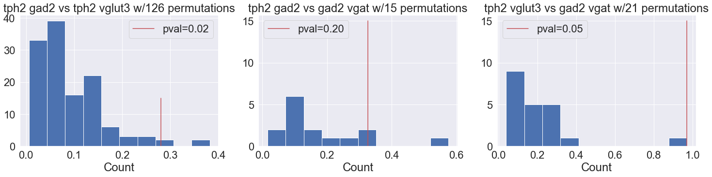 --- ### Viterbrain Model $$\max f(s[1:n]|I[1:n])=\max \prod_i \alpha_1(I_i) p(s_i|s[i-1])p(s_1,I_1)$$ <br> $$ p(s_i|s[i-1])=c_d d(s_i,s[i-1])+c_k \kappa(s_i,s[i-1])$$ <br> $\alpha_1:$ distribution of image intensity on foreground.